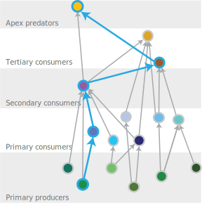

Metrics
Food web metrics

Evaluating food web metrics for wildlife communities across different forest types allows us to assess current conditions and predict how wildlife communities may respond to different stressors associated with environmental change. The following are a short list of example metrics and what they can tell us about the composition, structure, and resilience of a community.
Community composition
Species richness, describes the number of species in a community.
On the right, each dot is a species.
Species richness is a very commonly used metric, and management often seeks to increase or maintain native species richness. However, studies have shown that more species doesn’t necessarily mean that a community is more resilient, suggesting that not all species are created equally (e.g., they have different functions and contributions to wildlife community resilience).
Guild richness, describes the number of guilds, or functional groups, present in the community. Guilds are groups of species who have similar predator, prey, habits, body size, and contributions to wildlife community resilience.
On the right, guilds are indicated by the large colored ovals.
Community structure and function
Functional similarity, describes how similar species are in their function within the food web (i.e., their predator and prey relationships).
For example, on the right, the two tertiary consumers (pink and purple) are not very similar in their predator prey interactions (colored arrows). We measure pairwise similarity to calculate a metric for the whole community.
Take home: communities with high similarity (or redundancy) are considered to be more resilient to random species loss. This is because if one species is lost then there is a high likelihood that there is another species in the community that will perform that role (e.g., a guild mate), and overall wildlife community function is less likely to decline.
Maximum chain length, describes the number of links between a consumer species and a primary producer.
Take home: wildlife communities with long chain lengths, have top predators. These top predators can be more susceptible to anthropogenic change, and their loss may have cascading impacts on the rest of the community.

Modularity, describes the number of sub communities present in a community.
Sub communities are made up of species who tend to interact with each other more than with other species within the community (indicated by the blue and pink polygons).
Take home: communities with high modularity are hypothesized to be more stable and less vulnerable to random species loss. This is because if a species is lost, its impact is generally isolated to that subcommunity, and may not have cascading effects on the rest of the community.
To compare these related metrics we are currenlty estimating food webs at multiple spatial scales in the Central Sierra with the potential for multiple applications relating to describing communities, management, and climate change.